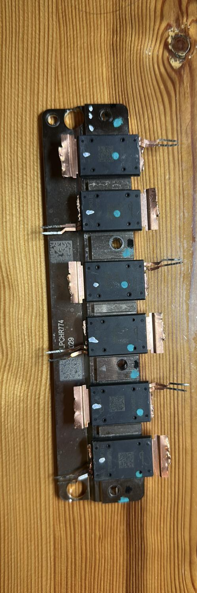
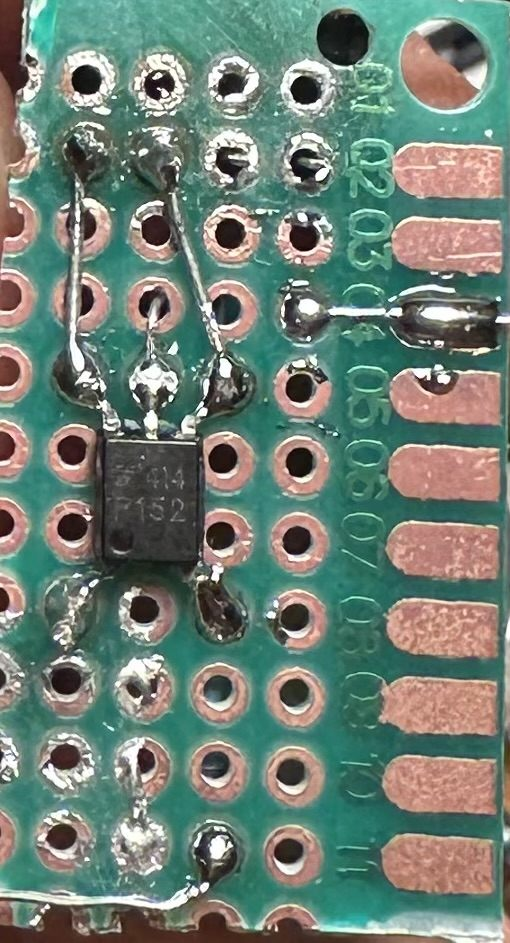

Essais de commutation de l’IGBT DG340
Deux acquisitions à l’oscilloscope Siglent SDS804X HD, réalisées lors des essais préparatoires d’un système d’accélération électromagnétique.
Ces essais portent sur le DG340X08T6B, un IGBT de puissance avec diode intégrée utilisé en électronique de traction électrique. StarPower indique une tension de blocage de 750 V et un courant nominal de 340 A.
Relevés et estimation du courant
Voies de l’oscilloscope
- C1 · jauneTension aux bornes du shunt, utilisée pour estimer le courant de la bobine
- C2 · violetTension grille-émetteur VGE (commande de grille)
- C3 · bleuTension collecteur-émetteur VCE
Courant de crête estimé
Icrête = |Ushunt| / Rshunt
Le shunt en constantan a une résistance nominale de 5 mΩ (0,005 Ω). La valeur absolue de la tension lue au curseur donne l’amplitude, quelle que soit la polarité de mesure.
Le calcul suppose que la tension relevée traduit principalement la chute de tension résistive dans le shunt.



Source constructeur · fiche technique DG340X08T6B, StarPower Semiconductor, rév. A05. Voir la référence au catalogue.